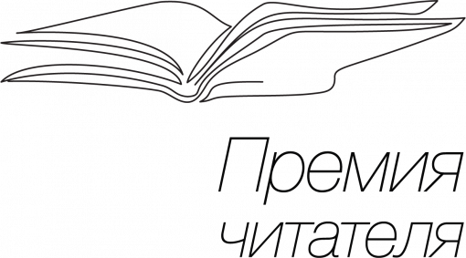

Премия «Читатель»
«Премии Читателя» - литературной награды библиотечного сообщества, учрежденной в 2015 году Российской государственной библиотекой для молодежи при поддержке Министерства культуры России и Российской библиотечной ассоциации. Премия присуждается в двух номинациях: «Художественная проза» и «Документальная проза (non-fiction)».
«Премии Читателя» - литературной награды библиотечного сообщества, учрежденной в 2015 году Российской государственной библиотекой для молодежи при поддержке Министерства культуры России и Российской библиотечной ассоциации. Премия присуждается в двух номинациях: «Художественная проза» и «Документальная проза (non-fiction)».

Литературная премия «Премия Читателя» присуждается авторам, пишущим на русском языке для молодежи. Это единственная литературная награда, которая, определяя лучшего из лучших, учитывает сразу три фактора: анализ реального спроса в библиотеках и на портале «ЛитРес», экспертную оценку и читательский выбор. Лауреатом седьмого сезона «Премии Читателя» 2022 года в номинации «Художественная проза» стал писатель-фантаст Сергей Лукьяненко за фантастический роман «Семь дней до Мегиддо». Произведение повествует о конце света, который угрожает планете Земля. Не самое большое произведение мэтра фантастики не только о спасении человечества. Оно куда больше о сохранении человечности в нас самих. Сюжет книги кажется простым, если не сказать незамысловатым. Жили-были мы с вами, дожили до 2021 года, попутно справившись с ковидом, который упоминается как «старый-добрый». Жили, не тужили и в один миг могли оказаться в пламени ядерной войны. Да, именно так. Однако вместо пожара планетарного масштаба случилось кое-что другое. Ракеты рухнули на землю, начинка боеголовок обратилась в свинец, Луну распылило на кольцо и обломки-спутники, а над Землёй материализовались Инсекты, представители инопланетной расы, высший разум и контролёры в одном флаконе. Здесь-то всё и завертелось.
Лучшей книгой в номинации «Документальная проза (Non/fiction)» признано произведение писателя, журналиста и общественного деятеля Сергея Шаргунова - «Саров. Два подвига». Автор пытается понять сам и донести до нас важное значение для истории страны небольшого городка Сарова Нижегородской области: Сарова - как глухого монастыря, Сарова - как научного городка. Интересная идея - объединить «два» Сарова.
Лучшей книгой в номинации «Документальная проза (Non/fiction)» признано произведение писателя, журналиста и общественного деятеля Сергея Шаргунова - «Саров. Два подвига». Автор пытается понять сам и донести до нас важное значение для истории страны небольшого городка Сарова Нижегородской области: Сарова - как глухого монастыря, Сарова - как научного городка. Интересная идея - объединить «два» Сарова.